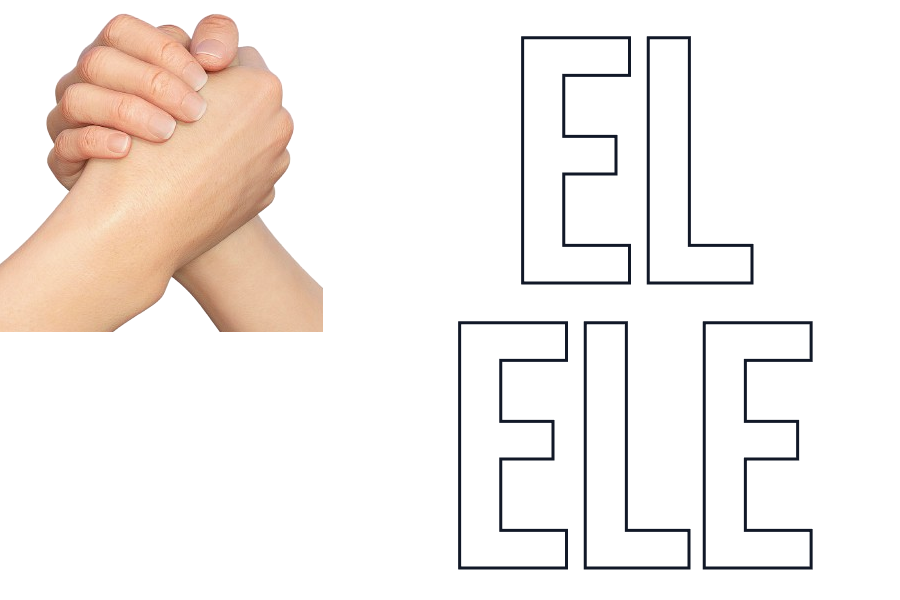

Bizler 1998'den beri hizmet veren anonim bir yardım kuruluşuyuz. Kurucumuzun kaybolmuşluk hissini bastırmak için, birilerine fayda sağlamak istemesiyle ortaya çıkmıştır. Normalde, şöyle bir kuruluşa imza atsak çok iyi olmaz mı? Sorusunu sorup ertelediğimiz herhangi bir fikirden olacak olan bu proje, yardım etmeye hevesli diğer insanlarla kesişince doğmuştur. 1998 yılında kurulmuştur desekte resmi kurluş tarihi 2000 yılıdır. 1998'de sadece taslak fikir ortaya atılmıştır. Söylediğimiz gibi, "çok iyi olmaz mı?" sesi; başka seslerle buluşunca onlarca ses oldu. Sonra yüzlerce ses oldu. Daha sonra binlerce ses oldu. Şimdi siz değerli insanlar sayesinde yüzbinlerce ses olduk binlerce insanın sesi olduk. Siz var olduğunuz sürece bizde var olmaya devam edecek ve faaliyetlerimizi sürdüreceğiz. Teşekkür ederiz.